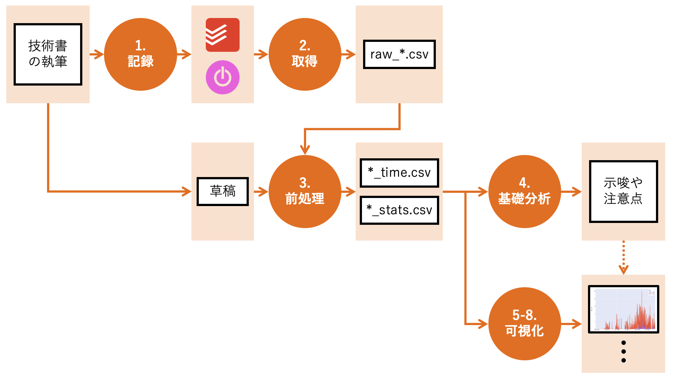

技術書を出版するまでの1161時間50分38秒#
背景#
技術評論社から 「データ可視化技術入門」 という書籍（以下、 本書 と呼びます）を出版しました。 本書は、マンガ・アニメ・ゲームのデータを使って、楽しくデータ可視化の基礎を学ぶ入門書です。
本書は上巻と下巻の分冊構成となっており、それぞれ基本と応用に焦点を当てています。
上巻：データを見る力・見せる技術

下巻：データを問う力・伝える技術

上巻は3部構成です。
第1部：データ可視化の導入
第1章：定義、目的、ツール
第2章：構成要素、手法、留意点
第2部：マンガデータを使ったハンズオン
第3章：データの準備（取得、前処理、基礎分析）
第4章：データの可視化
第3部 : 基本技術の解説
第5章：Python、Pandas、Plotlyの基礎
第6章：データの準備の基礎
第7章：データ可視化の将来
下巻は2部構成です。
第1部：可視化手法の包括的解説
第1章：量を見るための手法
第2章：分布を見るための手法
第3章：内訳を見るための手法
第4章：変数間の関係を見るための手法
第2部 : メディア展開データを用いたハンズオン
第5章：データの準備（取得、前処理、基礎分析）
第6章：データの可視化
目的#
このブログは 本書で紹介する技術の活用例として 、本書出版に関する作業時間[1]を分析・可視化することを目的としています。
以下は本ブログで扱う内容と、本書の該当箇所を整理した表です。 データ可視化の導入や展望を除き、 ほとんどの章と関連しています[2]。
本ブログで扱う内容 |
本書の該当箇所 |
|
|---|---|---|
1 |
上巻7章 |
|
2 |
上巻6章、上巻7章 |
|
3 |
上巻6章 |
|
4 |
上巻6章 |
|
5 |
下巻1章 |
|
6 |
下巻2章 |
|
7 |
下巻3章 |
|
8 |
下巻4章 |
|
- |
データ可視化の全工程 |
上巻3-4章、下巻5-6章 |
以下は、本ブログの分析工程を概説した図です。 まず、技術書の執筆作業をTodoistとToggl trackに 記録 することから始まります。 次に、Toggle APIを用いてデータを 取得 し、草稿データと合わせて 前処理 します。 基礎分析 を経て示唆や注意点を確認したあとで、 様々な手法で 可視化 して知見を獲得します。 ちなみに、本書でもほぼ同様のフローを採用しています。

なお、データ分析の作業工程は目的と対象に大きく依存するため、一般論を語ることは困難です。 上図と異なり、基礎分析と可視化を同時に行うこともあります[3]。 試行錯誤の結果、手戻りや繰返しが避けられないこともあるでしょう。 ここで紹介しているのは、あくまでも本ブログに限った話です。
想定読者#
このブログの第一の想定読者は 自分自身 です。 本書の執筆は、長期間にわたる大きなプロジェクトとなりました。 私を支えてくれた家族（とくに妻）への感謝を忘れないために、作業時間を分析・公開することにしました。 また、集中力のない自分をどう操縦すれば作業を進められるのか、 そのヒントをこの分析から得たいと思っています。
第二の想定読者は、 技術書の執筆を検討している方 です。 技術書を執筆する度[4]に思うのは、「こんなに大変だったとは」です。 このような誤算が生じる原因の一つは、 そもそも執筆時間に関する 定量的な記録 があまり見当たらないことではないでしょうか。 幸い、私はタイムトラッキングが趣味です。 2019年頃から活動時間を記録しており、本書の執筆に関するデータも手元にあります。 これを可視化することで、未来の技術書執筆者の参考になればと考えました。
第三の想定読者は、 本書の読者 です。 本ブログは、各章の執筆にかけたコストを様々な角度で可視化しています。 本書を小脇に抱えてご覧頂くことで、 特殊な角度[5]での読書体験を提供できたらと考えています。
最後に、本書のメインメッセージを再掲させてください。 好きなもの・興味のあるものを巻き込むと、学習がはかどります。 本書では、たまたまマンガ、アニメ、ゲームを例として採用しました。 しかし、こういった文化と縁遠い読者もいるかもしれません。 そういった方は、このブログで紹介するように 自分自身 を対象にデータ可視化をしてみてはいかがでしょうか？ 何だかんだ言って、自分のことには興味のある方は多いと思いますから。
スコープ#
このブログは 「データ可視化技術入門」 の サポートサイトではありません 。 あくまでも私個人の記録の一環として、その執筆時間を分析したものになります。
サポートサイトは以下から辿れますので、適宜ご活用ください。
技術評論社公式サイト

本書の公式情報はこちら
本書のJupyter Book

本書のソースコードはこちら
なお、このブログでは Loose Drawing のイラストを利用しています。 ありがとうございます。
自己紹介#
最後に、本書の筆者であり、このブログの運営者でもある私について紹介します。 本書の執筆過程で得られた知見やノウハウを、このブログを通して皆様と共有できれば幸いです。